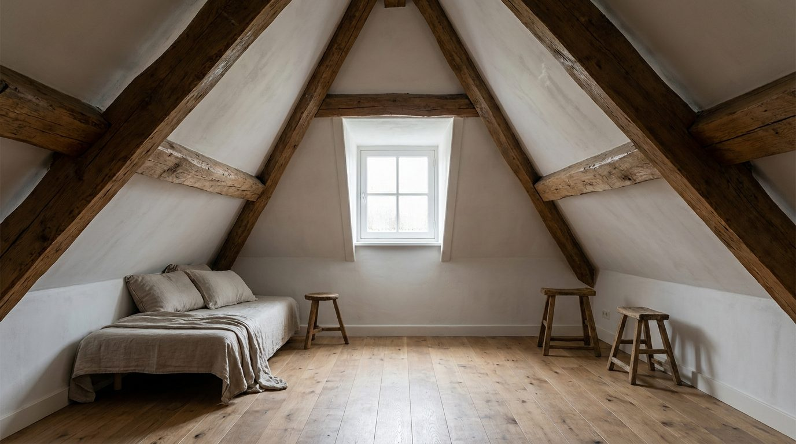

Atlante · FR-07 · Francia · Île-de-France
Attico sous les toits
Esempi · esterno e interno


Perché funziona
è il "piccolo" che il brief chiede: metri quadri ridotti, dettagli forti (travi, zinco, lucarne), molta personalità per arredamento compatto.
Architettura · elementi riproducibili
- Falde a 45°, travi in legno 15–20 cm, lucarne e finestre a tetto
- HSP variabile 1,90–3,00 m con bruschi cambi di quota
- Pavimento a doghe strette, spesso verniciato; camini in mattoni
- Ringhiera in zinco, abbaini, grondaie a vista
Luce
radente e bassa, da lucarne e finestre a tetto; forti variazioni chiaroscuro; 5000–5800 K; nei pomeriggi estivi sole diretto sui legni.
Prompt di generazione (EN)
Attic apartment under a Parisian zinc roof, sloped 45-degree ceiling with exposed old beams, two dormer windows, whitewashed walls, narrow oak floorboards, small cast-iron radiator, linen daybed, ceramic vase. Low raking daylight through the dormers, 5400 K, deep soft shadows under the slope, warm highlights on the beams. 28 mm lens, f/4, camera at 1.2 m, corner composition following the roof pitch, natural colour, no people, 4:5.
Errori tipici da controllaresoffitti troppo alti che annullano l'effetto sottotetto; travi che attraversano le finestre; vista sui tetti con sacré-coeur forzata.
Riferimenti reali
- Mansarda a 45° e tetti in zinco sono elementi costitutivi dell'immeuble haussmanniano
- Tipologia della chambre de bonne ricavata nel sottotetto, documentata nella letteratura urbanistica parigina (stessa fonte)